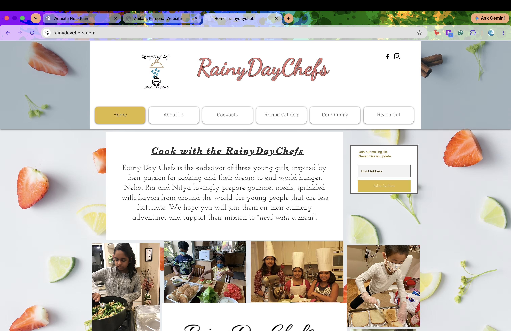

MY TECHNICAL & PERSONAL WORK
Featured Projects.
A closer look at three projects that reflect my interests in software development, financial technology, and community leadership. Each has challenged me in different ways, whether that means designing an application, analyzing financial information, or organizing an initiative that serves others.
PROJECT 01 / IOS DEVELOPMENT
Smart Study Scheduler
Personalized Academic Planning Application
Project Overview
Smart Study Scheduler is an iOS application I'm developing to make academic planning more personalized and realistic. Most traditional planners focus on deadlines and available time, but they don't necessarily account for factors that can affect productivity. I wanted to explore how information such as sleep patterns, workload, and availability could be used to create a more useful study schedule.
Technical Implementation
I'm building the application using Swift and SwiftUI. Users can enter assignments, deadlines, and available study hours, which serve as inputs to the scheduling system. I developed scheduling logic that determines how much time is available for different tasks and distributes study sessions across the user's schedule.
The project also explores integration with Apple HealthKit to incorporate sleep information into scheduling decisions. Rather than simply displaying health data, the goal is to use that information as another factor in determining when and how long a user should study.
Key Features
- Assignment and deadline management
- Personalized study session scheduling
- Apple HealthKit sleep data integration
- SwiftUI-based user interface
- Exploration of Screen Time functionality for a future Study Mode
What I've Learned
This project has helped me better understand iOS development and how to design applications that combine different sources of data. One of the most interesting challenges has been thinking through how a scheduling algorithm should balance deadlines, user availability, and personal habits without making the schedule too rigid.
PROJECT 02 / FINANCIAL TECHNOLOGY
Quant News Trading
Financial News Sentiment & Trading Signal Analysis
Project Overview
Quant News Trading is a personal project exploring how financial news can be analyzed to identify potential trading signals. Financial markets react to a wide variety of information, including company announcements, industry developments, and broader economic events. I wanted to investigate how natural language processing could help organize this information into measurable signals.
Technical Approach
The project is being developed in Python and is designed around a pipeline that collects financial news articles, analyzes their sentiment, and evaluates how relevant each article is to a particular company.
I'm exploring the use of FinBERT, a natural language processing model trained on financial text, to classify articles based on positive, negative, or neutral sentiment. The project also considers article relevance, since news directly related to a company's earnings may be more useful than general market commentary.
The planned scoring system combines sentiment and relevance across multiple articles within a selected time window. These scores can then be aggregated into potential buy, sell, or hold signals.
Market Data & Evaluation
Another component of the project involves using historical stock price data from yfinance to evaluate how generated signals relate to subsequent market movements. This is important because a sentiment score alone doesn't demonstrate whether a trading strategy is effective. Historical data can help assess the relationship between news sentiment and actual price changes.
Key Components
- Financial news collection using API-based data sources
- Sentiment analysis using FinBERT
- Company and industry relevance scoring
- Aggregation of article-level signals
- Historical stock price analysis using yfinance
- Exploration of future machine learning improvements
What I've Learned
This project has allowed me to combine my interests in computer science, mathematics, and finance. I've been especially interested in the challenge of translating qualitative information, such as a news article, into a quantitative score that can be evaluated against market data. It has also made me think more carefully about the limitations of sentiment analysis and the importance of validating a strategy rather than relying only on a model's predictions.
PROJECT 03 / COMMUNITY LEADERSHIP
RainyDayChefs
Youth-Led Nonprofit & Community Initiative

Project Overview
I founded RainyDayChefs in 2017 with the goal of bringing people together through cooking and community service. What started as a small youth-led initiative grew into an organization focused on preparing and distributing meals to communities in need.
Over the years, RainyDayChefs has provided more than 5,000 three-course meals. The initiative has involved coordinating volunteers, planning menus, organizing fundraising events, and working with community organizations to distribute meals.
Growth & Adaptation
One of the biggest challenges came during the COVID-19 pandemic, when our usual in-person cooking and meal preparation activities became difficult to continue. We adapted by creating cooking videos and virtual classes to stay connected with our community. As in-person activities resumed, we returned to meal preparation and expanded our outreach.
Key Responsibilities
- Coordinating volunteer teams and community events
- Organizing meal preparation and distribution
- Planning fundraising initiatives
- Building partnerships with community organizations
- Adapting operations during the COVID-19 pandemic
What I've Learned
RainyDayChefs has been one of the most meaningful projects I've worked on because it has allowed me to see the direct impact of something I helped build. Running the organization has taught me how to take ownership of a long-term initiative, coordinate different people and responsibilities, and adapt when plans change. These are skills I've also carried into my technical projects and professional work.
DATA VISUALIZATION
My Technical Skills in Practice
This interactive visualization explores the programming languages I've used across my internships, coursework, and personal projects. Use the filters to compare professional experience with academic and personal work, and hover over each bar to see where I've applied each language.
Want to Learn More?
Explore my background, professional experience, and technical skills on the home page.
Back to Home